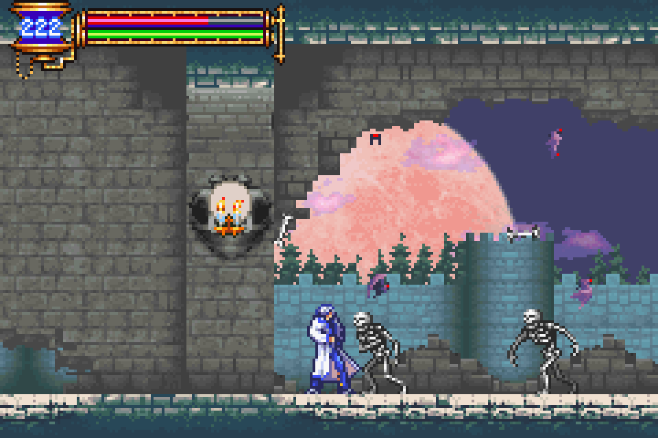
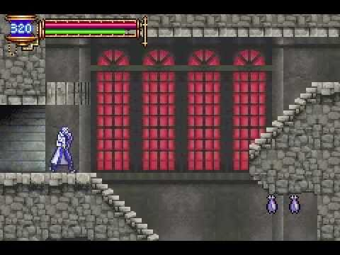
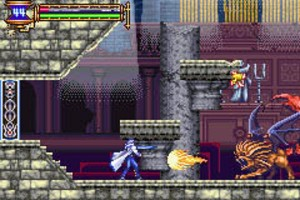
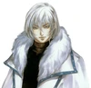
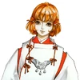
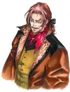
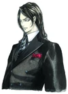
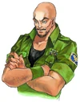
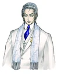
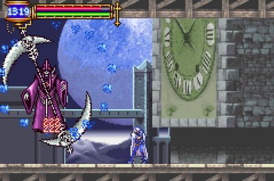

Castlevania: Aria of Sorrow
Castlevania: Aria of Sorrow fue publicado por Konami para Game Boy Advance en año 2003, y es el cuarto videojuego que utiliza el célebre estilo aventura-RPG de Castlevania: Symphony of the Night, siendo considerado su mejor heredero, secuela y replica portátil. Su título original japonés es Castlevania: Akatsuki no Enbukyoku (キャッスルヴァニア暁月の円舞曲? lit. "Castlevania: Minueto del Alba"). Además es el tercer y ultimo videojuego de la saga Castlevania publicado para éste sistema portátil de Nintendo. El productor Koji Igarashi, que había guiado a los equipos de producción de los anteriores títulos de la saga Castlevania, también condujo el desarrollo de éste videojuego. Michiru Yamane también volvió a componer la música para el videojuego junto a Takashi Yoshida y Soshiro Hokkai. El director Junichi Murakami era alguien nuevo para la saga Castlevania.

Jugabilidad
Castlevania: Aria of Sorrow sigue el modelo mismo establecido por el videojuego Castlevania: Symphony of the Night; la de un videojuego de acción-RPG. El jugador recoge nuevos equipamientos y habilidades mediante la exploración del castillo del videojuego y luchando contra enemigos y personajes enemigos cada vez más fuertes, que conduce finalmente a un encuentro culminante con el amo del castillo. El jugador ataca principalmente a distancia cercana utilizando gran variedad de armas. El estilo de control y de lucha de Soma Cruz es una reminiscencia de Alucard en el videojuego Castlevania: Symphony of the Night, en contraposición al manejo del látigo Matavampiros (Vampire Killer) más prominente presentado en los videojuegos de la saga Castlevania. Sin embargo, tiene un sistema diferente de ataques secundarios.
Al igual que con los títulos anteriores de la saga, se introduce un nuevo sistema de magia, el "Sistema Táctico de Almas" ( Tactical Soul System). Cada uno de los 110 enemigos en el videojuego puede proporcionar un alma única al ser derrotados, dependiendo de la cantidad de su estadística de Luck (Suerte) del personaje. Una vez recolectadas, las almas pueden ser equipadas, otorgando nuevas habilidades.
Estas almas se pueden intercambiar con el uso de dos Game Boy Advance, dos cartuchos de éste videojuego y un cable de enlace (link cable).

Modos desbloqueables incluyen jugar como Julius Belmont (Soma Cruz no es un Belmont) y el modo Boss Rush, donde los artículos únicos y armas muy poderosas son concedidos para derrotar a las criaturas jefes de manera consecutiva dentro de una cantidad de tiempo determinado.
Después de terminar el videojuego, un nuevo juego se puede iniciar en modo normal o difícil, con la opción de mantener todos los artículos y almas obtenidos (excepto las almas que son necesarias para mantener la historia del videojuego en el orden preestablecido).
Argumento
Los eventos del videojuego toman lugar en el año 2035 y el protagonista es un joven muchacho llamado Soma Cruz, un estudiante de intercambio de preparatoria en Japón. Mientras subía las escaleras hasta el Templo Hakuba, dirigiéndose a observar el primer eclipse solar del siglo XXI junto con su amiga Mina Hakuba, Soma es repentinamente transportado hacia el Castillo de Drácula junto con ella. Allí se encuentra con Genya Arikado, que derrota a grupo de enemigos que les ataca y después le explica la capacidad de Soma de absorber las almas de los monstruos. Genya también le informa a Soma que debe dirigirse a la Cámara del Maestro rápidamente, para que así pueda evitar que Mina sufra una muerte insoportablemente dolorosa causada por la atmósfera maligna del castillo.

Castlevania: Aria of Sorrow tiene varias secuencias finales posibles, dependiendo del curso tomado por el jugador.
| Personajes |
Nombres |
Descripcion |
|  |
Soma Cruz |
Personaje principal. Es un estudiante de intercambio de 18 años que vive en Japón. Junto con su amiga Mina, deciden observar juntos el primer eclipse solar del año 2035, el cual termina por transportarlos al castillo de Drácula. Al arribar a la foraleza, descubre su misterioso poder de absorción de almas, del cual no tenía idea. |
|  |
Mina Hakuba |
Es la amiga de la infancia de Soma y sacerdotisa del Templo Hakuba. Al principio queda desmayada por el ataque de los enemigos al momento de ser transportados al castillo de Drácula debido al eclipse solar. |
|  |
Julius Belmont |
Este personaje en un inicio no recuerda nada. Conforme se avanza en el videojuego comienza a recordar, y en un punto de la aventura recuerda todo, siendo verdaderamente Julius Belmont, el ultimo descendiente del clan Belmont hasta esa fecha y responsable del golpe de gracia que acabó con Drácula definitivamente en el año 1999. |
|
Yoko Belnades |
Este personaje la cual pertenece al clan Belnades es descendiente de Sypha Belnades (Castlevania III: Dracula's Curse). Ella es una bruja enviada por la iglesia para investigar a Graham Jones. |
|  |
Genya Arikado |
Este personaje misterioso trabaja para una organización secreta de seguridad mundial. Esta disfrazado para no revelar su "verdadera identidad". |
|  |
Hammer |
Es un soldado militar enviado a investigar el Templo Hakuba. Dejado a su suerte por la milicia, decide abrir una tienda dentro del castillo. |
|  |
Graham Jones |
Este misionero es el líder de un culto popular que también extrañamente pudo llegar al castillo de Drácula. Esta en búsqueda del poder de Drácula. |
Recepción
El videojuego fue bien recibido por el fandom de la saga Castlevania en general, a diferencia de las anteriores entregas para Game Boy Advance, Castlevania: Circle of the Moon y Castlevania: Harmony of Dissonance, que recibieron críticas muy variadas. Es considerado por muchos como el mejor de los videojuegos de Game Boy Advance. Mientras que muchos sintieron que la jugabilidad híbrida Metroid/Castlevania iniciada por el videojuego Castlevania: Symphony of the Night había comenzado a agotarse en este punto, este videojuego nuevo ofrecía una jugabilidad más equilibrada y limpia, junto con una trama fresca, buenos gráficos y otras mejoras generalmente aceptadas. El sistema de recolección de almas es visto como bastante divertido, y permite mucho espacio para la improvisación y la personalización al combinar los poderes de Soma Cruz de diferentes maneras. Muchos consideraron, sin embargo, que el sistema no se incursionó tan profundamente como podría haber sido. También, una queja del videojuego anterior, Castlevania: Harmony of Dissonance, sobre que el videojuego utilizaba muy poco contraste visual en los fondos, se mantuvo un poco en este otro videojuego, aunque si hay muchos fondos genuinamente hermosos y coloridos, además que los suelos de baldosas parecen haber sido hechos de una manera más competente.

Nuevas publicaciones
Castlevania: Aria of Sorrow fue publicado nuevamente en la región de América del Norte en enero del año 2006, junto con el videojuego Castlevania: Harmony of Dissonance, bajo el titulo de Castlevania Double Pack de Konami, que contiene ambos videojuegos en un solo cartucho Game Boy Advance. También fue porteado por Glu Mobile como un videojuego de telefonía móvil, pero como una exclusividad para la región de Europa. Recientemente, el videojuego se encuentra disponible para Wii U en el servicio Consola Virtual de Nintendo para las regiones occidentales.